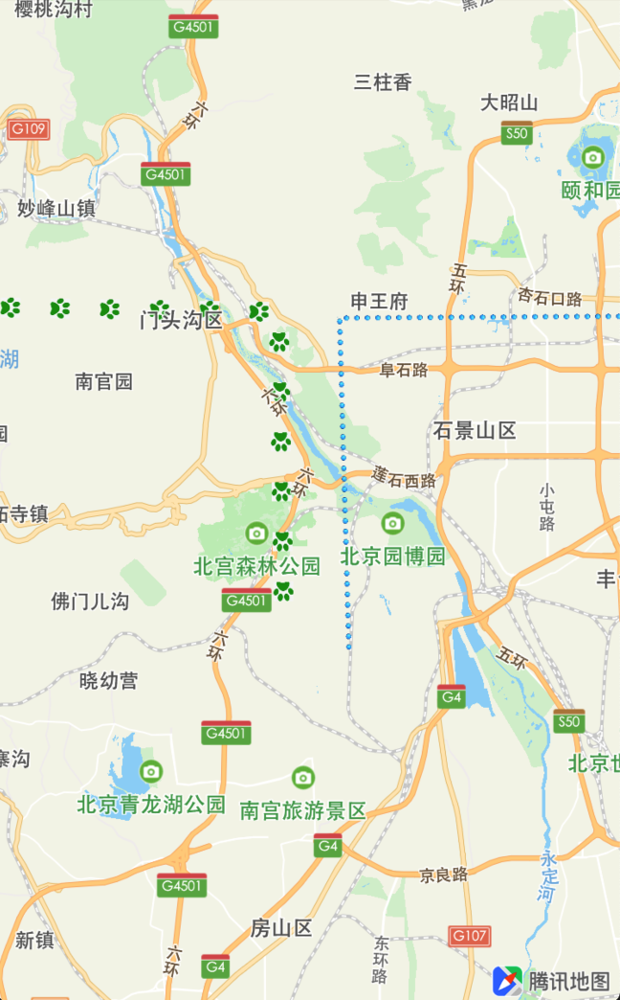
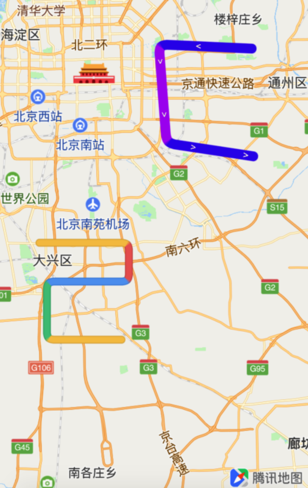
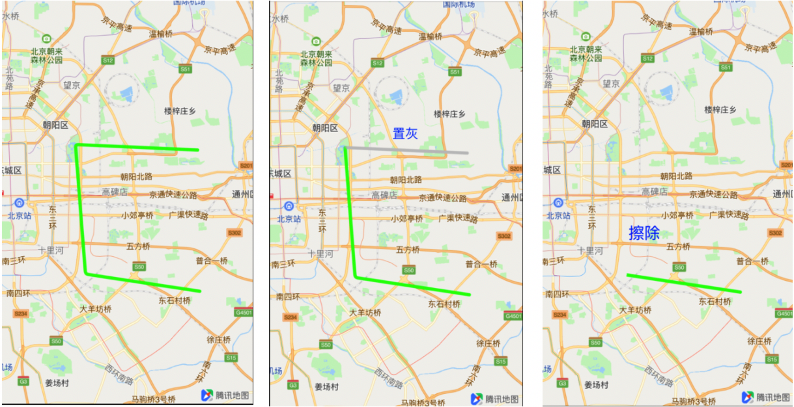

自定义纹理
对普通折线设置自定义纹理的代码和效果如下：
//纹理样式
typedef NS_ENUM(NSInteger, QTextureLineDrawType) {
QTextureLineDrawType_ColorLine = -1, // 不使用纹理, 而且以颜色的形式绘制, 使用segmentColor中色值绘制
QTextureLineDrawType_SliceAsBackground, // 将图片以1像素为单位按行切片, 根据下标从图片选取1像素来绘制线路样式(最大支持16像素高)
QTextureLineDrawType_RepeatDraw, // 重复绘制整个图片
QTextureLineDrawType_FootPrint, // 以足迹的形式重复绘制整个图片
};
// 路径覆盖
@implementation QRouteOverlay
- (id)initWithCoordinates:(CLLocationCoordinate2D *)coordinateArray count:(NSUInteger)count arrLine:(NSArray<QSegmentStyle *> *)arrLine
{
if (count == 0 || arrLine.count == 0) {
return nil;
}
if (self = [super initWithCoordinates:coordinateArray count:count])
{
self.arrLine = [NSMutableArray array];
[self.arrLine addObjectsFromArray:arrLine];
}
return self;
}
@end
// 自定义纹理渲染
- (QOverlayView *)mapView:(QMapView *)mapView viewForOverlay:(id<QOverlay>)overlay
{
if ([overlay isKindOfClass:[QRouteOverlay class]])
{
QRouteOverlay *ro = (QRouteOverlay*)overlay;
QTexturePolylineView *polylineRender = [[QTexturePolylineView alloc] initWithPolyline:overlay];
polylineRender.segmentStyle = ro.arrLine;
if ([self.lines indexOfObject:overlay] == 1) {
// 重复绘制整个图片
polylineRender.drawType = QTextureLineDrawType_RepeatDraw;
polylineRender.styleTextureImage = [UIImage imageNamed:@"ball"];
polylineRender.lineWidth = 15;
} else {
polylineRender.drawType = QTextureLineDrawType_FootPrint;
polylineRender.lineWidth = 12;
polylineRender.styleTextureImage = [UIImage imageNamed:@"foot.jpg"];
}
return polylineRender;
}
return nil;
}
// 添加足迹路径
- (void)addFootPrint
{
const int COUNT = 3;
CLLocationCoordinate2D polylineCoords[COUNT];
polylineCoords[0].latitude = 39.9442;
polylineCoords[0].longitude = 116.01;
polylineCoords[1].latitude = 39.942570;
polylineCoords[1].longitude = 116.141769;
polylineCoords[2].latitude = 39.838619;
polylineCoords[2].longitude = 116.144;
NSMutableArray* routeLineArray = [NSMutableArray array];
for (int i = 0; i < COUNT-1; i++)
{
QSegmentStyle *subLine = [[QSegmentStyle alloc] init];
subLine.startIndex = i;
subLine.endIndex = i+1;
// random color.
subLine.colorImageIndex = arc4random() % 6;
[routeLineArray addObject:subLine];
}
QRouteOverlay *polyline = [[QRouteOverlay alloc] initWithCoordinates:polylineCoords count:COUNT arrLine:routeLineArray];
[self.lines addObject:polyline];
[self.mapView addOverlay:polyline];
}
// 添加重复绘制图片路径
- (void)addRepeatDraw
{
// 与足迹路径相似
}
运行程序，效果图如下：

设置线的分段颜色：
可通过 QSegmentStyle 中的 colorImageIndex 设置各分段的颜色，示例代码如下：
// 路径覆盖(与自定义纹理相同)
@implementation QRouteOverlay
- (id)initWithCoordinates:(CLLocationCoordinate2D *)coordinateArray count:(NSUInteger)count arrLine:(NSArray<QSegmentStyle *> *)arrLine
{
// ...........
}
@end
- (QOverlayView *)mapView:(QMapView *)mapView viewForOverlay:(id<QOverlay>)overlay
{
if ([overlay isKindOfClass:[QRouteOverlay class]])
{
QRouteOverlay *ro = (QRouteOverlay*)overlay;
QTexturePolylineView *polylineRender = [[QTexturePolylineView alloc] initWithPolyline:overlay];
polylineRender.segmentStyle = ro.arrLine;
polylineRender.styleTextureImage = [UIImage imageNamed:@"colorSample"];
// 设置箭头样式
polylineRender.symbolImage = [UIImage imageNamed:@"arrow.png"];
polylineRender.lineWidth = 10;
polylineRender.drawSymbol = YES;
polylineRender.symbolGap = 52;
return polylineRender;
}
// 折线类型
if ([overlay isKindOfClass:[QPolyline class]])
{
QPolyline *poly = (QPolyline*)overlay;
QTexturePolylineView *polylineRender = [[QTexturePolylineView alloc] initWithPolyline:overlay];
if ([self.trafficLines indexOfObject:overlay] == 1) {
polylineRender.lineWidth = 10;
// 不使用纹理, 而且以颜色的形式绘制, 使用segmentColor中色值绘制
polylineRender.drawType = QTextureLineDrawType_ColorLine;
polylineRender.drawSymbol = YES;
polylineRender.symbolGap = 32;
int count = (int)poly.pointCount;
polylineRender.borderWidth = 2;
NSArray *colors = @[[UIColor colorWithRed:254/255.0 green:212/255.0 blue:68/255.0 alpha:0.9],
[UIColor colorWithRed:244/255.0 green:75/255.0 blue:126/255.0 alpha:0.9],
[UIColor colorWithRed:82/255.0 green:192/255.0 blue:132/255.0 alpha:0.9]
];
NSMutableArray<QSegmentColor *>* segColors = [NSMutableArray array];
// 随机产生分段颜色
for (int i = 0; i < count-1; i++) {
QSegmentColor *style = [[QSegmentColor alloc] init];
style.startIndex = i;
style.endIndex = i+1;
style.color = colors[arc4random()%3];
style.borderColor = [UIColor colorWithRed:32/255.0 green:122/255.0 blue:67/255.0 alpha:0.9];
[segColors addObject:style];
polylineRender.segmentColor = segColors;
}
} else {
// 通过 colorImageIndex 定义分段颜色
polylineRender.displayLevel = QOverlayLevelAboveLabels;
polylineRender.lineWidth = 8;
NSMutableArray* segStyles = [NSMutableArray array];
int count = (int)poly.pointCount;
for (int i = 0; i < count-1; i++) {
QSegmentStyle *style = [[QSegmentStyle alloc] init];
style.startIndex = i;
style.endIndex = i+1;
style.colorImageIndex = arc4random() % 5;
[segStyles addObject:style];
}
polylineRender.segmentStyle = segStyles;
}
return polylineRender;
}
return nil;
}
// 具体配置可参考官方iOS Demo
- (void)addCustomLine
- (void)addColorLine
运行程序，效果图如下：

路径置灰和擦除
此功能用于把行走过的路径线段置灰或者擦除，示例代码如下：
// 路线线段数组
@property (nonatomic, strong) NSMutableArray<QPolyline *> *lines;
QTexturePolylineView *polylineView = (QTexturePolylineView *)[self.mapView viewForOverlay:self.lines.firstObject];
/**
* - (void) eraseFromStartToCurrentPoint:(CLLocationCoordinate2D)coordinate searchFrom:(int)pointIndex toColor:(BOOL)clearColor
*
* coordinate 被擦除的终点坐标
* pointIndex 终点所在子线段起点的下标
* clearColor yes则擦除 no则置灰(参照eraseColor)
*/
// 擦除线段
[polylineView eraseFromStartToCurrentPoint:CLLocationCoordinate2DMake(39.846874, 116.494518) searchFrom:2 toColor:YES];
// 置灰线段
[polylineView eraseFromStartToCurrentPoint:CLLocationCoordinate2DMake(39.948517, 116.484256) searchFrom:1 toColor:NO];
效果图如下：
